COMMON MUSIC NOTATION |
cmn is a simple little hack that can create and display traditional western music scores. It is available free via anonymous ftp from ccrma-ftp as pub/Lisp/cmn.tar.gz.
cmn is intended as an adjunct to Heinrich Taube's Common Music and my CLM: it can present a notelist (a bewildering morass of numbers) as a standard score. Although I put a lot of effort into making the output legible, it really isn't aimed at producing publishable scores. If you need beautiful output, use Lilypond, Score or Finale.
Introduction |
CMN is a lisp program that is normally run from within the cmn package. After loading cmn, type (in-package :cmn) or (in ACL) :pa :cmn, and all the cmn entities will be accessible. You can also prepend the package name if you're working in some other package, but that quickly becomes tedious.
As an example of how cmn works in general, the lisp expression:
(cmn staff treble c4 q)
produces the file "aaa.eps" (the default value of *cmn-output-pathname*):

cmn is our main function. It reads in all its arguments, organizes the musical data into systems and staves, adds line and page breaks, beams, ties, slurs, dynamics, and so on, aligns and justifies the result, and produces an "encapsulated PostScript" file (aaa.eps in this case). The basic nomenclature is that of Score or Common Music. c4 is middle c, q means quarter note, and so on. In its most general use, cmn has the following form:
cmn overall-score-attributes systems
The overall-score-attributes control global graphics decisions such as overall size, page width, beam thickness, and so on. Say we want to produce a smaller version of our previous example. The default size is 40; we'll set it to 24:
(cmn (size 24) staff treble c4 w double-bar)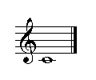
The systems contain all our musical data. Each system is a group of related staves, normally bracketed together and separated vertically from other systems. Each staff contains the actual notes and whatnot. If no system is given explicitly, one is created automatically. Similarly, if no staff is given, one is provided automatically. Here's an example of a score with two systems, one of which has two staves:
(cmn (size 24)
(system brace
(staff treble (meter 6 8)
(c4 e. tenuto) (d4 s) (ef4 e sf)
(c4 e) (d4 s) (en4 s) (fs4 e (fingering 3)))
(staff treble (meter 3 4)
(c5 e. marcato) (d5 s bartok-pizzicato) (ef5 e)
(c5 e staccato tenuto) (d5 s down-bow) (en5 s) (fs5 e)))
(system bracket
(staff bar bass (meter 6 16)
(c4 e. wedge) (d4 s staccato) (ef4 e left-hand-pizzicato)
(c4 e tenuto accent rfz) (d4 s mordent) (en4 s pp) (fs4 e fermata))))
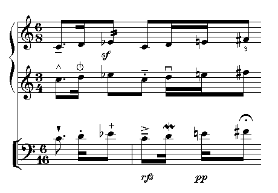Each score object (c4, or staff, for example) is both a constant and a function. In its existence as a constant, it provides access to all the defaults that surround that object. As a function, it accepts any number of arguments adding or changing attributes. In normal CLOS syntax, we would call setf on the slots of the associated instance variable, but that's a lot of typing, requires that I document the accessors, and makes it hard to see the musical data for all the parentheses and local bindings. So, the standard way in cmn to modify an object is to pass the modification as an argument to the object. That is,
(c4 q staccato)
creates a middle-c object, sets its duration fields to reflect the value of a quarter note, and adds a dot for staccato. In simple cases, this is exactly the same as
c4 q staccato
encountered in the staff data list. The staff function notices sequences of notes and associated data and packages them up for you, just as if you had put in the parentheses by hand. You do have to use parentheses when ambiguities might otherwise develop. We could have written our previous example as:
(cmn (size 24)
system brace
staff treble (meter 6 8) c4 e. tenuto d4 s ef4 e sf
c4 e d4 s en4 s fs4 e (fingering 3)
staff treble (meter 3 4) c5 e. marcato d5 s bartok-pizzicato ef5 e
c5 e staccato tenuto d5 s down-bow en5 s fs5 e
system bracket
staff bar bass (meter 6 16) c4 e. wedge d4 s staccato
ef4 e left-hand-pizzicato c4 e tenuto accent rfz
d4 s mordent en4 s pp fs4 e fermata)
I find the first form easier to read, but I'm used to Lisp's
parentheses. I haven't completely cleaned up all the left over cases,
so there are still a few places where parentheses are needed. cmn,
system, and friends are functions, not macros, so the streams of data
are interpreted as straightforward Lisp arguments to a function. The
screen resolution is less than most printer resolutions, so sometimes
the image displayed on the screen is slightly ragged due to round off
errors and so on (the bracket in the example just given is a case in
point). In the code examples that follow, I'll omit the arguments,
like (size 24), that aren't completely germane to the discussion.
Anders Vinjar points out that you can run gv with the -watch switch to automatically update the display when CMN writes a new version of aaa.eps:
shell> gv -watch aaa.eps &
Overall Style |
The cmn argument overall-score-attributes sets various decisions that affect the layout
of the entire score. Except for the page-layout related variables
(page-width, et al), all distances are in terms of staff heights --
a normal staff is 1.0 high, and everything else is keyed to that. If
you want to use centimeters rather than inches, and European paper
sizes rather than American, set the variable *cmn-units* to :cm. It
defaults to :inches. The attributes can be any of the following:
| output-file | "aaa.eps" | (if name ends in "-1", subsequent files count up from there) |
| output-type | *cmn-output-type* | :postscript, :x, :quickdraw |
| size | 40 | overall size scaler |
| automatic-line-breaks | t | should line breaks be added by cmn |
| automatic-octave-signs | t | should octave signs be added by cmn |
| automatic-beams | t | should beams be added by cmn (see beaming meter message) |
| automatic-ties | t | should ties be inserted by cmn |
| automatic-bars | t | should bars be inserted by cmn |
| automatic-rests | t | should rests be inserted by cmn |
| automatic-naturals | nil | should naturals be inserted by cmn |
| automatic-beat-subdivision-numbers | t | should irregular subdivisions be numbered by cmn |
| automatic-measure-numbers | nil | can be t = 1, a number, :by-line, or :by-page |
| automatic-page-numbers | nil | adds page numbers if t |
| curvy-flags | t | curved or straight flags |
| use-italian-octave-signs | nil | do we add "va" to "8" and "ma" to "15" |
| add-bassa-to-octave-signs | nil | do we add "bassa" as well |
| use-abbreviated-staff-names | t | after first use, is name abbreviated? |
| always-show-gliss-name | t | should "gliss" appear on otherwise umarked glisses |
| always-show-staff-names | t | should staves continue to be named after 1st |
| always-show-clefs | t | should clefs be output at the start of every new line |
| automatic-clef-size | 1.0 | size of clefs added under always-show-clefs flag |
| all-output-in-one-file | nil | put page breaks in output file (rather than separate files) |
| implicit-accidental-style | :new-style | various ways to handle implicit accidentals |
| implicit-accidental-duration | 1 | |
| redundant-accidentals | t | if nil, cancel redundant accidentals |
| accidental-to-note-head-space | 0.0625 | breathing space between accidental and note-head |
| layout | nil | for complicated staff layouts -- see below |
| page-color | nil | background color (rgb) of page |
| page-height | 11.0 (29.7) | inches (cm) -- cm if *cmn-units* = :cm |
| page-width | 8.5 (21.0) | inches (cm) |
| left-margin | 0.5 (1.0) | inches (cm) |
| right-margin | 0.5 (1.0) | inches (cm) |
| header-margin | 1.0 (2.0) | inches (cm) |
| footer-margin | 1.0 (2.0) | inches (cm) |
| title | nil | |
| metronome | 60 | for add-note and friends |
| line-separation | 2.0 | white space between lines of music |
| staff-separation | 1.5 | white space between staves |
| system-separation | 1.5 | white space between systems |
| note-head-size | 1.0 | overall scaler on size of note heads (default is a bit small) |
| grace-note-size | .5 | |
| glissando-thickness | .01 | fatness of (straight) glissando-lines |
| tie-thickness | .04 | fatness of ties |
| tie-curvature | .125 | how curved ties try to be |
| slur-thickness | .03 | how fat slurs get (this is a skinny default) |
| slur-curvature | .25 | how curvy slurs try to be (this is pretty flat) |
| maximum-slur-slope | .75 | how steep slurs can get |
| beam-spacing | (* 2.125 .126) | distance between beams |
| beam-width | (* 1.125 .126) | fatness of beams |
| beam-slope-trigger | .5 | min ambitus for sloped beam (.5=half octave) |
| maximum-beam-tilt | .4 | how tilted beams are allowed to be |
| partial-beam-length | .4 | max length of a partial beam |
| partial-stem-length | 0 | set this >0 if you want partial stems |
| stem-width | .025 | width (fatness) of stem |
| barline-thickness | .02 | thickness of bar lines |
| double-barline-thickness | .1 | thickness of double bar lines |
| ideal-stem-length | .5 | first stab at basic stem length |
| staff-line-width | .02 | thickness of staff lines (most use thicker lines than this) |
| staff-name-font | "Times-Roman" | instrument names prepended to staves |
| staff-name-font-scaler | .4 | |
| staff-name-font-minimum-size | 8 | |
| text-connecting-pattern | '(10 0) | default is an undashed line |
| text-connecting-thickness | .02 | |
| first-measure-number | nil | where to start the automatic measure numbering |
| initial-onset | 0 | score start time (to avoid lots of initial rests) |
| full-last-line | nil | should last line be full length no matter what |
| page-hook | nil | used for page related actions (see cmn-ex.lisp) |
| line-hook | nil | used for line related actions |
| free-expansion-factor | 1.25 | white space added during justification |
| music-font | nil | name of font, if not cmn's (e.g. "Sonata") |
| one-line-per-page | nil | if t, each line is placed on a separate page |
| title-separation | nil | height of title above staff |
| default-font | "Times-Roman" | "Times-Roman" "Times-Italic" "Times-Bold" "Times-BoldItalic" |
| dynamics-size | .8 | default dynamics mark size |
| dynamics-minimum-vertical-separation | .5 | min separation |
| brace-space | .125 | space between brace and staff lines |
| first-dot-spacing | .2 | space between note and first time augmentation dots |
| dot-spacing | .1 | space between subsequent time augmentation dots |
| dot-vertical-spacing | 0.0 | vertical offset of dots |
| flag-vertical-spacing | .2 | vertical space between stem flags |
| maximum-subdivision-bracket-tilt | 0 | maximum bracket tilt |
Unless otherwise stated, all of the numbers are in units of staff-heights. That is, a normal five line staff is 1.0 high. The function in-inches (in-cm) translates from inches (cm) to cmn units. Say, for argument, that you want fatter beams:
(cmn (beam-width .275) (beam-spacing .4) staff treble c4 s d4 s)
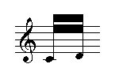The curvy-flags attribute controls whether flags are curved or straight:
(cmn (curvy-flags nil) staff treble a4 s)

The actual contents of the score are the next arguments to cmn. All the entities that specify either a musical object or some attribute of that object use the same syntax, and can accept the same "messages". Any object or group of objects can be rotated, scaled (that is stretched in the horizontal and/or vertical direction), and moved to any location in the score. Any arbitrary file of graphics commands (a .eps file) can be treated as an object just like any other object, and cmn can be called recursively, packaging up entire scores within other scores. Finally, it is relatively easy to integrate your own graphics hacks into cmn (see graphics). In what follows, I will use the name "message" for a function that affects the thing it is an argument to. That is, in the expression
(meter 6 8 (meter-size 2))
the expression "(meter-size 2)" is hereby designated a "message" to the object created by the meter function. "6" and "8" are ordinary arguments, "meter" is a function that creates a score object. In this case, the effect of the message is to double the size of the meter numbers:
(cmn treble (meter 6 8 (meter-size 2)) ...)

Musical Data |
All the musical data is organized into a list of systems, each system
containing a list of staves, each staff containing a list of objects
like notes, rests, and so on, and each object containing a variety of
lists describing its attributes. Systems and staves are created
automatically if not specified in the arguments to cmn. That is, (cmn
system staff treble) is the same as (cmn treble) but in more
complicated cases, it is better (and sometimes necessary) to be
explicit about groupings. In addition to the built-in entities, any
function encountered in the list of cmn arguments is (of course)
evaluated and the result (either one object, or a list of objects) is
spliced into the data as though it had been written explicitly,
providing a simple and extremely powerful way to call on the full
resources of lisp. A few such functions are provided by cmn, and
examples of others will be given below.
In the following discussion of the various things cmn knows about, it should be kept in mind that any object not only reponds to the standard messages like rotate or x0 (all of which are listed below), but can also have attached to it a list of "marks". A "mark" is any arbitrary code you want associated with some other object (itself a "mark" in some cases), and evaluated whenever its owner is evaluated (displayed). A staccato dot, for example, is a mark attached to a note. Its associated code figures out where the center of the note is, which side (up or down) the dot belongs on, and how far away it should be (to avoid collision with staff lines, for example). This code gets called when we want to display an object or find out how big it is. The standard messages are:
dx dy x0 y0 x1 y1 center justification
dx and dy normally affect the placement of the object relative to whoever owns it. A note, for example, is owned by the staff it is on, and travels around with that staff as lines and pages are justified. The note may itself own a staccato mark, which travels around with the note as it finds its vertical position on the staff. Very often the point (x0,y0) is the lower left corner of the object, and (x1,y1) marks the upper right corner of the "bounding box" of the object. Not all objects know about center, but those that do return the musical center point of the object (the point used to align things across staves and so on). For example, say we want to push a marcato mark over to the right:
(cmn (staff treble (c4 w (marcato (dx .5)))))

An object's matrix controls its orientation and placement relative to whoever owns it. There are a variety of functions provided to make it easier to deal with coordinate transformations:
rotate angle ; rotates the current object counterclockwise by angle degrees.
scale x y ; stretches or compresses the object by x and y (as multipliers)
; (scale 0 0) or invisible makes the current object invisible
mirror (function) and mirrored (variable) ; the same as (scale -1 1)
transform matrix ; multiplies the current object's matrix by matrix
The outer score's matrix can be used to move the score around on the output page:
(cmn (matrix (list 1 0 0 1 200 0)) staff treble)
The first 4 numbers ("1 0 0 1") provide an unscaled, unrotated display of the score; the fifth is the x offset, and the sixth if the y offset (in pixels).
An object's pattern controls how it is drawn (its "ink"):
gray-scale &optional (val 0) ; 0 = black (the default), 1 = white, val is between 0 and 1
outlined &optional (val 0) ; 0 = thinnest outline, val is a float
color r-g-b ; 1.0 = color, 0.0 none (e.g (color '(1.0 0.0 0.0)) => red)
(cmn staff (treble mirrored (dx .5))
(treble (rotate 180) (dy .75) (color '(0.25 0.5 0.0)) (scale -2 .5))
(bass (gray-scale .5) (dx .75))
(bass (outlined .02) (dx .75))
(quarter-rest (color '(1.0 0.0 0.0)) (rotate 45) (dx .85) (scale 1 2))
(eighth-rest (rotate 90) (dy -.4) (dx .25) (color '(0.0 0.5 0.5)) (scale 2 1)))

The X11 color names are defined in rgb.lisp. (cmn (treble aquamarine) c4 q) for example. For more complex patterns, see the example in cmn-ex.lisp.
system &rest objects
Each score is organized into groups of related staves, each such group called a system. The system function is much like the cmn function -- it tries to organize its arguments into system-wide marks and staves full of musical objects. The main objects that a system notices are staff objects and system-wide brackets. The two kinds of brackets are bracket and brace. If a staff has both a bracket and a brace (divided strings in an orchestral score, for example), put the bracket on the system, and the brace on the lower of the staves:
(cmn (system (staff)) (system bracket (staff) (staff brace) (staff)))


If a mark occurs before any staff has been created, it is attached to the system as a whole. Anything else is assumed to belong to the current staff.
It has been pointed out to me that most others use "system" to mean the entire group of staves that make up what I call a "line", and that the word "section" is used where I am using "system". I was thinking of "section" as "a portion of a piece" (see the section function below), not "a portion of an ensemble". I hope this use of non-standard terminology won't cause too much confusion.
staff-name staff-size staff-lines tied-to start-line line-separation
Each staff treats its arguments much as cmn and system do -- it tries to collect everything into key signatures, meters, clefs, bar lines, notes, chords, and so on. A staff has an optional name (normally the instrument associated with that staff), a size (a multiplier on the y-extent of everything on that staff), a number of lines (normally 5), a list of marks, and a list of objects.
(cmn (staff (staff-name "E-sharp Bazooka") (staff-lines 2) (e4 w fff))
(staff (staff-name "c-flat Clavicle") (staff-lines 0) treble d4 q c5 h.)
(staff (staff-name "Violin") (staff-size .5) sub-bass g2 h c2 h))

If the staff name has "-flat" or "-sharp" after the first letter, the musical symbol is used instead. Unless you say otherwise (via the score slots always-show-staff-names and use-abbreviated-staff-names), subsequent lines of a staff try to use an abbreviated version of the instrument name. The tied-to message overlays staves. You can set the staff position and extent using dy, x0 and x1. For example, to get an empty staff 3 inches long:
(cmn (staff (x1 (in-inches 3))))
to get a score printed vertically:
(cmn (transform '(0 1 -1 0 200 200)) (staff (x1 7.5) treble c4 e d4 e))
or to make a piece of blank music paper:
(cmn (header-margin 0) (engorge
(loop for i from 0 to 6 collect (staff (x1 (in-inches 7.5))))))
If a staff is passed the gray-scale message, everything on the staff is printed with that color. The message start-line is useful with percussion parts -- it specifies which line to start with (3=mid).
The line-separation message can be used to change the staff's line separation independent of the staff size or the global value of *staff-line-separation* (which defaults to .126).
See stf.lisp for an example of changing staff-lines at odd times.
bar double-bar interior-double-bar dashed-bar full-double-bar full-bar begin-repeat-bar end-repeat-bar begin-and-end-repeat-bar full-interior-double-bar begin-and-end-repeat-bar-without-thin-lines begin-and-end-repeat-bar-with-one-thick-line begin-flanges-repeat-bar end-flanges-repeat-bar
(cmn (size 24) bar c4 q begin-and-end-repeat-bar c4 q interior-double-bar c4 q dashed-bar c4 q begin-repeat-bar c4 q end-repeat-bar c4 q double-bar)

If a bar occurs as the first or last thing on a staff, it is left or right justified to the beginning or end of that staff. The "full" bars continue across system breaks. To get a bar covering a whole system at the start of every new line, include the bar as the first thing on the last staff in the system.
double terminal justification within-measure dashed dots-left dots-right broken height breathing-space thickness flanges
nil, :right, or :left.
t, :right, or :left
Here we have a thick bar line half a staff tall positioned in mid-staff:
(cmn (barline-thickness .2) treble c4 q (bar (dy .25) (height .5)) c4 q)
bracket &rest objects brace &rest objects
The brace is a piano-style curly-bracket. It should be placed on the lower of the two staves. Bracket can cover any number of staves; to get a brace over many staves use the brace-staves message.
french-violin treble tenor-treble
soprano mezzo-soprano alto tenor baritone baritone-C
baritone-F bass sub-bass double-bass
percussion quad-bass double-treble quad-treble
(clef treble ...) is the same as (treble ...).
(cmn staff french-violin c4 q treble c4 q soprano c4 q mezzo-soprano c4 q
alto c4 q tenor c4 q baritone c4 q bass c4 q sub-bass c4 q)
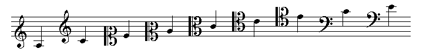If a staff has no clef, it is given one (for note placement decisions), but it is scaled (by 0 0) to be invisible. Clefs take the additional messages unjustified and breathing-space. Unless the score-slot always-show-clefs is nil the clef is displayed at the start of every new line.
Tenor-treble is a treble clef with an "8" at the bottom, transposing down an octave (used in vocal music for the tenor part, which is always far too high for modern day tenors); double-treble has an 8 at the top, transposing up an octave; quad-treble (is there a standard name for this?) has "15" transposing up two octaves; the double-bass and quad-bass clefs are similar.
accidental &rest objects sharp flat natural double-sharp double-flat small-sharp small-flat small-natural (cmn staff treble g4 q gs4 q gf4 q gn4 q (g4 q double-sharp) (g4 q double-flat) (g4 q natural-sharp) (g4 q natural-flat))

When used with notes, use either the cs/cn/cf notation or the sign function; when used with ornaments, use ornament-sign. The file quarter.lisp implements one form of quarter-tone accidentals.
key &rest objects c-major a-minor cs-major as-minor df-major bf-minor d-major b-minor ef-major c-minor e-major cs-minor f-major d-minor fs-major ds-minor gf-major ef-minor g-major e-minor af-major f-minor a-major fs-minor bf-major g-minor b-major gs-minor cf-major af-minor
To cancel a key signature (i.e. put naturals where the accidentals would normally be), use cancel key. For funny key signatures, use def-key. Here the name of the key is followed by the note names corresponding to the accidentals as displayed in the treble clef.
(def-key foo-major bf4 ef5 fs5)
(cmn staff tenor b-major c4 q
bar (cancel b-major) ef-major c4 q bar bass foo-major c4 q)
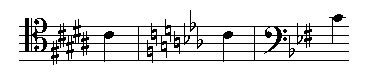meter numerator denominator &rest objects
meter displays a meter and sets the staff's current meter (for beaming decisions and so on). Numerator and denominator can be integers, strings, or symbols. The named meters are
alla-breve common-time cut-time unmetered
(cmn staff treble (meter 6 8) c4 h. bar (meter '5+7 8) c4 w
bar cut-time c4 w bar (meter 2 2 in-parentheses (dx .1)) c4 h
bar (meter 9 8) (meter '4+5 8 (dx .1) in-parentheses) c4 w
bar (meter 3 2 note-head-denominator) c4 h
bar (meter 3 4 suppressed-denominator (meter-size 2)) c4 q.)

The size of the meter numerals can be changed with the message meter-size. If you want beaming decisions to follow a meter without any meter being displayed, set the meter-size to 0. Meter takes the additional messages: suppressed-denominator, note-head-denominator, and beaming. The beaming message affects the automatic beaming decisions -- see cmn-ex.lisp for examples.
note &rest objects
The standard Score or Common Music note names c0..bs8 are all built-in
both as constants and as functions. c4 is middle-c; cf4 is a semitone
from c4, and bs4 is a semitone from b4. As a function, each takes all
the usual messages. Onset times and durations are handled in terms of
quarter notes, independent of the actual tempo. That is, the message
(onset 2.5) means the note in question starts at the time of the
2.5-th quarter note -- the true time in seconds is of no interest to
us. Similarly, (duration .5) means an eighth-note, no matter what the
tempo or meter are. The only place this might cause confusion is in
compound meters (6/8) where we are still calculating onsets and
durations in quarter notes, not 1.5 quarter notes. Unfortunately
western music notation has some peculiar special cases involving
measured tremolos and so on -- these will be treated as we get to
them. The rhythmic values can be:
double-whole whole half quarter eighth sixteenth thirty-second sixty-fourth one-twenty-eighth 64th 64th. 32nd 32nd. 16th 16th. 8th 8th. q q. q.. h h. h.. w w. dw e e. e.. s s. s.. ts te tq th te. tq. ts. q... h...
ts stands for triplet-sixteenth. The periods indicate dotted rhythmic values. That is, q. is a dotted quarter. In general, (rq n) produces a rhythm object with a rhythmic value of n quarter notes. q = (rq 1), tq = (rq 2/3), a quintuplet eight is (rq 2/5) and so on. Use the ratio form of the value so that cmn has some chance of telling that you really mean a triplet 17-th. The numbers and brackets marking irregular beat divisions are normally added automatically by cmn.
When notes are not simply marching along one after the other, you can use the onset message to set the onset times explicitly (or use the beat message which is relative to the measure onset and numbers the beats starting at 1). Additional messages to note are:
line note-head sign cclass pitch octave head-quarters tie-direction stem-dy stem-direction stem-up stem-down no-stem in-parentheses slur-direction note-head-size dots flags head-quarters dashed-stem
Stem direction is either :up, :down, :none, or nil. If the latter, cmn tries to decide from the context which direction to draw the stem. :none means "don't draw a stem". stem-up, stem-down, and no-stem are also variables.
(cmn staff treble (c4 h (onset 0) stem-down) (c5 e (onset 0) stem-up) (b4 e (onset .5) stem-up) (a4 q (onset 1.0) stem-up))

The message dashed-stem to notes can be used to draw a dashed stem. It is either nil, t or a pattern-list. dashed-stem and whisper are also variables.
It is a bother to keep track of onsets, ties, and so on when there are several voices on a staff. For this case, put the voices on separate staves, then tie them together using the tied-to message:
(cmn (setf s1 (staff treble (meter 6 8) a4 e a4 e a4 e a4 q.))
(staff (tied-to s1) (d4 q. stem-down) (d4 q. stem-down)))

Note-head describes what kind of note head you want. Nil, the default, is the same as :normal and produces a normal note head. Other types are :diamond, :diamond-1 (slanted sides), :triangle, :square, :x, :circled-x, :artificial-harmonic, :tremolo, :slash, :none, :airy-head, :breath-out, :breath-in, :arrow-up, :arrow-down. The note-head can also be any arbitrary mark (graphics code) you want -- it will be placed where the note head would otherwise have gone.
(cmn (size 24) staff treble (c4 e (note-head :square)) (e4 e (note-head :x)) (g4 q (note-head :triangle)))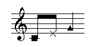
Additional attributes of a given note are simply added to the list of arguments, and it is normally up to the individual marks and cmn to sort out who goes where. The dots, flags, and head-quarters messages can be used to override cmn's simple-minded decisions about these things (head-quarters sets whether to use a quarter-note, half-note, or whole-note note head):
(cmn (automatic-rests t) (automatic-ties nil) (automatic-beat-subdivision-numbers nil) staff treble (meter 7 8) (c4 (rhythm 7/16) (dots 0) (flags 1) (setf sub (beat-subdivision- (subdivision "8:7")))) (c4 (rhythm 21/16) (dots 1) (flags 0)) (c4 (rhythm 7/4) (dots 0) (flags 0) (head-quarters 2) (-beat-subdivision sub)) (c4 q. (dots 0) (flags 5)) (c4 (rhythm 3/16) (dots 0) (flags 3) (setf sub (beat-subdivision- (subdivision "4:3")))) (c4 (rhythm 9/16) (dots 1) (flags 2)) (c4 (rhythm 3/4) (dots 4) (flags 0) (-beat-subdivision sub)))
When note heads would collide, cmn tries to move one back or forth so that both are displayed. If you want unisons to share the same notehead, set the variable *overlap-noteheads* to t. To assure cmn that rhythmic values are exact (to keep it from trying to "rationalize" Common Music input), set the variable *exact-rhythms* to t.
If you set curvy-flags to nil, the length and slant of the flags can be set via the variables *straight-flag-dx* (default is .3) and *straight-flag-dy* (default is 0.0).
chord &rest objects
Chord produces a chord. One of the arguments to chord should be
notes &rest ns
(cmn staff treble (chord (notes e4 g4 f4 a4 c5 b4 d5) s stem-down) (chord (notes e5 g5 f5 a4 c5 b4 d5) s) (chord (notes cn4 ef4 gn4 bf4 ds5 fn5) e stem-down))

Messages to the chord object (ties, note-head shapes, rhythmic values, and so on) affect every note in that chord. To set some attribute of just one note in a chord, pass it as a message to that note within the notes list. Chords across staves use the tied-to message (see cmn-ex.lisp).
(cmn staff treble
(chord (notes c4 e4 g4) q (note-head :diamond))
(chord (notes (c4 (note-head :diamond))
(e4 (note-head :triangle))
(g4 (note-head :x))) q))
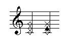auxiliary-note &rest objects
Auxiliary-note creates a mark that contains a (small) note. It is normally used in situations like harmonics where we sometimes want to display a little note where the true pitch is. The arguments to auxiliary-note are exactly the same as those to note. There's also auxiliary-note-at-end to place the note at the right side of the owning note.
(cmn staff treble (c4 q (note-head :diamond)
(auxiliary-note c6 no-stem in-parentheses)))

grace-note &rest objects grace-notes &rest objects appoggiatura &rest objects stem-direction slashed slurred unjustified stem-dy slash-thickness
Stem-direction is normally :up. Slashed is t for grace-notes and nil for appoggiaturas. Slurred is t for both. Slurs are very hard to get right automatically in all cases. See more discussion under slur. If you don't want extra room provided for the grace note or appoggiatura, use the message unjustified. For multiple grace notes, the default is to place two beams on two and three such notes, and three beams on more than three. This can be over-ridden simply by specifying explicitly the rhythm you want:
(cmn staff treble
(g4 q (grace-note fs4))
(g4 q (grace-note (slurred nil) (stem-direction :down) b4
(note-head :diamond) staccato tenuto wedge fermata))
;; omit the slur and use a diamond head on the grace note
;; and get very confused about articulation
(g4 q (grace-note e4 fs4)) (g4 q (grace-note gf4 ef4))
(g4 q (grace-note (slashed nil) b4 a4)) ;; omit the slash
(b4 q (grace-note d4 e4 fs4 g4 a4))
(g4 q (grace-note ef5 e bf4 e ef4 e))) ;; just one beam on the grace notes
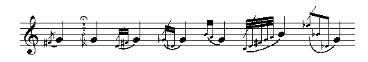Appoggiaturas are similar to grace notes in that they are normally displayed in a smaller size than the normal notes, and are not explicitly lined up in terms of onset and duration (the main note is aligned and the little notes tag along behind). Appoggiaturas in cmn assume that you don't want a slash through the beam or flag, and that the default rhythmic value is eighth note. The syntax is otherwise the same as that for grace notes.
rest &rest objects
double-whole-rest whole-rest measure-rest dotted-whole-rest half-rest dotted-half-rest quarter-rest dotted-quarter-rest eighth-rest dotted-eighth-rest sixteenth-rest dotted-sixteenth-rest thirty-second-rest sixty-fourth-rest one-twenty-eighth-rest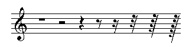
(cmn staff treble bar whole-rest bar half-rest quarter-rest eighth-rest sixteenth-rest thirty-second-rest sixty-fourth-rest one-twenty-eighth-rest bar (measure-rest 23) bar)
Unless you indicate otherwise (via (automatic-rests nil)), cmn adds rests wherever note onsets and previous durations seem to have left a gap:
(cmn staff treble (c5 s (onset .75)) (g4 e. (onset 1.25)))

cmn-ex.lisp and rests.lisp contain abbreviations for common rest names and code for other kinds of rests, such as slanted measure rests. If the measure length is greater than a whole note (for example, a meter of 3/2 as in joh.cmn), the whole-rest refers to a rest of up to four quarters in length; to indicate a whole rest symbol that fills out a full measure, use whole-measure-rest.
dynamics &rest objects ppp pianississimo pp pianissimo p piano mp mezzopiano pppp ffff fff fortississimo ff fortissimo f forte mf mezzoforte sff spp sf sforzato sforzando forzando fz fp rfz rinforzando sfp sfz niente
If you want some other indication, try dynamic n &optional spacing-data. Crescendo wedges
are handled separately (see crescendo), and connected text like
poco a poco is handled as connected-text. An example of the dynamic
function is (cmn staff treble c4 q (dynamic "fffffff")). The spacing-data affects the
internal glyph spacing -- (cmn treble c4 q (dynamic "fffspz" (list .2 0 .2 0 .15 0 .05 0 0 0 0 0))).
The vertical line for subito is "I" or "subito":
(cmn (free-expansion-factor 3.8)
(c4 h (begin-crescendo (begin-dynamic (dynamic "fIp")) (end-dynamic (dynamic "Ipp" ))))
(c5 h (stem-up) (end-crescendo))
(c4 h (begin-crescendo mf (dynamic "Ip")))
(c5 h (stem-up) (end-crescendo)))
Articulation staccato accent little-swell wedge tenuto marcato down-bow up-bow detache martele thumb natural-harmonic stopped-note open-note pedal pedal-off bartok-pizzicato snap-pizzicato left-hand-pizzicato swirl mouth-position
The long example in the introduction uses most of these marks. Little-swell takes an optional dynamic mark. Marcato and the pizzicatoes take the optional message thickness. Pedal.lisp provides support for the three piano pedals and explicit pedalling. See also accent.lisp and percussion.lisp for 20-th century markings such as:
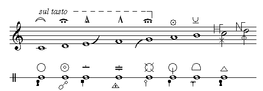Ornaments mordent inverted-mordent double-mordent turn short-trill trilled-turn trill tr
Each of these has an optional sign (ornament-sign). Trill takes several addditional messages -- the main issue here is how to display the details of the trill. The options are:
sign-position other-note wavy-line wavy-time
sign-position can be :right (the default), :up, or :in-parentheses. wavy-line creates a wavy line to the next note. wavy-time sets the end point (in onset-style values) of the wavy line (the default is the note's end time). Wavy-line's argument can be t, nil, or a list; if the latter, the arguments are considered '(dx0 dy0 dx1 dy1) to make it easier to extend the line in various ways.
(cmn staff treble c5 q mordent c5 q turn c5 q short-trill c5 q trilled-turn c5 q trill c5 q (mordent (ornament-sign small-flat)) (c5 q (trill (sign-position :up) (ornament-sign small-natural))) (cs5 q (trill (ornament-sign small-sharp) (sign-position :in-parentheses))) (c5 q (trill (wavy-line t))) (c5 q (trill (ornament-sign flat))))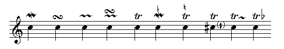
arpeggio arrow arrow-up arrow-down no-arpeggio
These articulation marks apply primarily to chords. The arpeggio mark can have an arrow at the top or bottom. No-arpeggio is a bracket on the left side of the chord.
(cmn staff treble
(chord (notes c4 e4 g4) h (arpeggio arrow-down))
(chord (notes c4 e4 g4) h arrow-up)
(chord (notes d4 g4 e5) h no-arpeggio))

arrowhead-up arrowhead-down
These draw arrowheads.
fingering &rest objects
Fingering takes, in addition to the usual arguments, any number of numbers which are then displayed in a vertical stack above or below the object. fingering-size and fingers exist. The arguments to fingering can also be strings or text objects.
(cmn staff treble (e4 q (fingering 3)) (chord (notes c5 g4) q (fingering 7 2)))

pause &rest objects breath-mark general-pause g.p. grand-pause fermata upside-down-fermata hold caesura pause (cmn staff treble (meter 2 4) (c4 q fermata) (quarter-rest g.p.) (c4 q breath-mark) (c4 q upside-down-fermata) double-bar)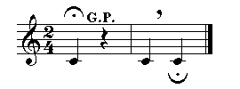
text &rest objects
Text is a form of mark like staccato. The text can be in any available font, and, as usual, scaled, rotated, etc. The default font is given by the slot text-font. The font-related messages are:
font-name font-size font-scaler ;font-name default is "Times-Roman"
(cmn staff treble
(c4 q (text "middle-c" (dx 1.0) (dy 2.0) (rotate 180)
(font-name "Times-Roman") (font-size 12))))

In addition to the default justification (:none), the text can be left justified (:left), centered (:center) or right justified (:right) -- (text "hi" (justification :right)). (Unjustified = (justification :none)). Connected text is handled by text- and friends discussed below. font-size is the true size (unscaled), whereas font-scaler scales the font-size by the overall score size. Text placement normally is anchored to the owning object (the c4 in our previous example), but this can cause endless positioning headaches for lyrics and whatnot. For special cases, use the messages x and y. These are either nil (the default) or a lambda form that completely over-rides normal positioning decisions. The form is apply'd to the text mark, the owning object, the current score, and whatever other arguments were passed to the display procedure. Examples can be found in the various .cmn files included with cmn. (See also prolog). To position lyrics, one possibility is the following (see also lyrics.lisp):
(defun lyrics (&rest args)
(apply #'text (font-name "Times-Roman") (font-scaler .5)
(y #'(lambda (mark note score &optional justifying) (- (staff-y0 note) .9)))
(x #'(lambda (mark note score &optional justifying)
(+ (x0 note) (if (sign note) .2 0))))
args))
To display a particular glyph from a font using the character's location in the font, use the glyph function (see cmn-ex.lisp for an example).
The message underlined causes the text to be underlined.
font-name must be a font that the current output-type choice can handle. In postscript (the default), this means that the postscript interpreter must be able to find the font somehow. On some systems, there's a file named Fontmap (or Fontmap.GS for ghostscript -- /usr/share/ghostscript/7.05/lib/Fontmap.GS on my machine) that contains a list of names and the associated font:
/Palatino-Roman /URWPalladioL-Roma ;
which says that the font-name "Palatino-Roman" will be recognized, and that its font file can be found via the alias "URWPalladioL-Roma" which itself points to p052003l.pfb which can be found in one of the font directories (/usr/share/fonts/default/Type1/p052003l.pfb on my machine). If you give some unknown font name, the text will likely be rendered as a series of question marks.
Multi-note marks |
There are a number of marks that apply to more than one note -- ties, slurs, beams, and so on. cmn handles these in two ways. Each multi-note mark has a begin-<mark> and end-<mark> form that is both a variable and a function (as with all the other objects), and these follow a stack discipline. That is, the last one to begin is the first one to end -- marks can be nested without problem. If the marks need to cross one another, a mechanism is needed to make it obvious which begin-<mark> belongs to which end-<mark>. In cmn, this is done with tags. Here is an example of the simple form:
(cmn staff treble (c4 q begin-slur) (d4 q) (e4 q end-slur))

And an example of tags:
(cmn staff treble (c4 q (setf slur-tag (begin-slur))) (d4 q (end-slur slur-tag)))

The tag is simply a variable (give it any name you like). In the example given above the tag was unnecessary, but consider this example:
(cmn staff treble
(c4 h (setf lower-text (text- "hi"))
(setf upper-text (text- "sil" (y0 2.0))))
(d4 q (-text- "ver" upper-text (y0 2.0)))
(d4 q (-text- "ho" lower-text))
(e4 q (-text "!" upper-text (y0 2.0)))
(e4 h (-text "away!" lower-text)))

Here the line connecting the words has to know where the next word in its sentence is, and without the tags (upper-text, lower-text), that task could be relatively difficult.
Connected text
Text that needs to be connected across notes or passages is handled by
text- -text- -text text_ _text_ _text
These take any number of arguments, one of which should be either a string or a text object. text- starts a new connected text sequence and connects to either -text- or -text. -text- connects to a current sequence (either the last one started or the one indicated by a tag passed to -text-) and continues it forward. -text connects to a current sequence and finishes it. The connecting pattern is the list text-connecting-pattern which defaults to a simple line between the pieces of text (that is '(10 0)). To get a dashed line,
(cmn (text-connecting-pattern '(5 10)) staff treble (c4 h (text- "hi")) (d4 q) (d4 q (-text- "ho")) (e4 q) (e4 h (-text "away!")))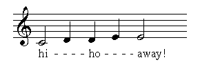
The level (vertical position) of the pattern can be set with connecting-pattern-level. Other possible patterns are :dash (centered between words) and :arrow (long right-arrow). The score-slot connecting-pattern-thickness or the message thickness sets the thickness of the connecting-line. text- returns a tag that can be used to distinguish between simultaneous text sequences. If the text- call encounters the x or y message, the associated lambda form is applied across the entire connected text sequence (see joh.cmn for an example). For a purely local change of connecting pattern, use the message (to text- et al) connecting-pattern. text_ and friends are like text-, but place the connecting pattern at the base line (the level of the period), rather than in the middle of the line. See also the comments in cmn3.lisp about various lyrics functions -- these provide much more control over the placement of the text and the connecting pattern.
glissando and portamento glissando-to &rest objects portamento-to &rest objects begin-glissando end-glissando begin-portamento end-portamento glissando- -glissando portamento- -portamento
These create the line connecting two notes with optional text sitting on the slanted line. The line is normally straight; use the message wavy-line to get a curvy connecting line. Use the message thickness or score slot glissando-thickness to adjust the thickness of the (straight) glissando-line. The variable *cmn-glissando-extension* can be used to change the gliss line length (default .125, reduce to lengthen).
(cmn staff treble (e4 h (glissando-to a3)) quarter-rest (c4 h begin-glissando) (g4 h end-glissando)) ;; set free-expansion-factor to 2 to get room for the word "gliss" ;; or use the message minimum-length: (minimum-length 2.0)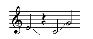
If there's room, cmn adds the word "gliss" or "port" or whatever you want to the line.
(cmn staff treble
(c4 h (begin-glissando
(text "up up up" (font-name "Times-Roman") (font-scaler .6))))
(c5 h end-glissando))

crescendo and diminuendo begin-crescendo begin-diminuendo end-crescendo end-diminuendo crescendo- -crescendo diminuendo- -diminuendo
These create the wedges sometimes used to mark crescendos and diminuendos. The wedge starts at the current note and ends either at the note that contains the end-crescendo or wherever its duration falls. The wedge can start anywhere -- the message to delay the wedge beginning is onset-offset. The message width controls how wide the wedge gets. You can specify the dynamics mark to be placed at the beginning or end of the wedge either by passing the mark to the begin-crescendo function, or by using begin-dynamic and end-dynamic. The always-dyn-up macro places these marks (and dynamics) above the staff. If you use the function begin-crescendo (or begin-diminuendo), end it with the function end-crescendo (end-diminuendo), not the variable form.
(cmn staff treble (c4 q (crescendo (duration 2.0))) (d4 q) (c4 q (begin-diminuendo (end-dynamic f) (width .75))) (d4 q) (e4 q (end-diminuendo)) (c4 q (begin-crescendo ppp f)) d4 q e4 q f4 q (g4 q (end-crescendo)))

Ties begin-tie end-tie tie-direction tie-curvature dashed dx0 dy0 dx1 dy1 breathing-space
Ties are handled like glissandos. Tie-direction sets which way the tie curves, either :up or :down. Tie-curvature controls how much the tie curves; the default is the score slot tie-curvature. The argument to dashed is a list (length-of-pattern length-of-white-space).
(cmn staff treble (c4 q begin-tie) (c4 q end-tie) (c4 q (begin-tie (tie-direction :up) (tie-curvature .5))) (c4 q end-tie))

When entire chords are tied, all notes within the chord are tied automatically.
(cmn staff treble (chord (notes c4 e4 g4 c5) q begin-tie) (chord (notes c4 e4 g4 c5) q end-tie))

To tie just selected notes of a chord, put the ties on those individual notes:
(cmn staff treble (chord (notes (c4 (setf tie-c4 (begin-tie))) e4 g4 c5) q) (chord (notes (c4 (end-tie tie-c4)) e4 g4 c5) q))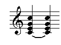
Unless you indicate otherwise (by setting automatic-ties to nil), cmn puts in ties wherever it deems necessary. See also ring.lisp for ring- and friends (ties off into space).
(cmn staff treble (meter 2 4) f4 e. f4 q. f4 h.)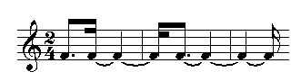
(cmn staff treble (meter 2 4) (chord (notes f5 af4 df5) (rq 5/4)) (chord (notes f5 ef5 df5 a4) (rq 3/2)) (chord (notes f4 gf4 af4 d5) (rq 5/4) stem-down))

Slurs begin-slur end-slur slur- -slur- -slur
Slurs are like ties, but can cover any number of notes. cmn makes a real effort to make a pretty slur, but it often screws up. When that happens, you will have to edit the slur-data by hand, and that's not easy. The data is a list of two lists, each a set of 6 points. These are the controlling points of the two Bezier curves that outline the slur. '((x1 y1 x2 y2 x3 y3) (x2 y2 x1 y1 x0 y0)) is the general idea, with the slur thickness subtracted from y1 and y2 on the return run. There are a variety of messages to begin-slur to help edit slurs:
dx dy dx0 dy0 dx1 dy1 dx2 dy2 dx3 dy3 slur-direction slur-thickness slur-curvature dashed
dx and dy are applied to all points whereas the others apply only to the indicated point. (begin-slur (dy -.25)) moves the entire slur down .25, but (begin-slur (dy0 -.25)) moves only the first of the 4 points that describe the slur. Dashed for slurs is the same as for ties.
(cmn staff treble
g4 q begin-slur ef4 q c4 q end-slur
g4 q begin-slur b4 q a4 q end-slur
b4 q begin-slur e5 q d5 q cs5 q end-slur
a4 q begin-slur e4 q f4 q g4 q a4 q end-slur
g4 q begin-slur ef5 q bf4 q ef4 q end-slur)

tremolo &rest objects
There are two kinds of tremolo: unmeasured and measured. In addition, there are a number of stylistic choices involving beams, slashes, slurs, and note heads, not all of them entirely logical. For example, one book on music notation says half note tremolos should have one beam and two slashes, quarter note tremolos should have no beams and three slashes, and eighth note tremolos should have one beam and two slashes, but filled in note heads, since otherwise there would be no way to tell them from half note tremolos. The logical way would be to put no beams and three slashes on both half note and quarter note tremolos. Grumble! To try to sort out the various possibilities, there are first:
begin-tremolo end-tremolo begin-measured-tremolo end-measured-tremolo unmeasured-tremolo tremolo paranoid-tremolo measured-tremolo
begin-tremolo and end-tremolo are unmeasured tremolos. The begin and end forms apply to those cases where there are two notes in the tremolo. The others (unmeasured-tremolo, etc) are for single note tremolos. Paranoid-tremolo includes the word "trem.". These take the additional messages:
tremolo-position :on-stem or :between-stems measured t or nil paranoid t or nil tremolo-slashes nil (=3) or an integer tremolo-beams nil or the number of beams slant .1 width .3 thickness .08 font-name "Times-Roman" font-scaler .4 maximum-length .85 (cmn staff treble (c4 q tremolo) (c4 w paranoid-tremolo) (c5 q (tremolo (tremolo-slashes 1))) (c4 h begin-measured-tremolo) (d4 h end-measured-tremolo) (c4 e begin-tremolo) (d4 e end-tremolo))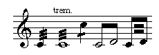
Beams
Beams can be handled automatically or by hand. If the score slot automatic-beams is t (the default), automatic beaming follows the current meter if it can. Any explicit beams over-ride automatic beaming. Explicit beams are handled by:
begin-beam end-beam no-beam no-beam-break beam- -beam- -beam beam-direction explicit-beams dx dy dx0..dy1 ;see cmn-ex.lisp for examples
The first two are like begin-slur and end-slur and apply to all notes on the staff between the begin-beam and end-beam. Beam- and friends are like text- and friends. Here's an example of all three possibilities:
(cmn staff treble c4 e d4 e (c4 e begin-beam) (d4 s) (e4 s end-beam) (c4 e (setf beam (beam-))) (d4 e (-beam- beam)) (e4 e (-beam beam)))

The numbers marking irregular beat subdivisions are kept as simple as possible -- cmn adds the bracket only if there is something peculiar in the grouping. To deal with these explicitly use:
beat-subdivision- -beat-subdivision- -beat-subdivision no-beat-subdivision
These take the additional messages subdivision (a number, string, or text object) and bracketed. The latter can be t (the default), nil, :up, or :down. The details of the bracket can be changed with the messages dx, dy, dx0, dy0, dx1, dy1, and bracket-type (see cmn-ex.lisp).
(cmn staff treble c4 te c4 te c4 te
(d4 (rq 1/5)) (d4 (rq 1/5)) (d4 (rq 1/5)) (d4 (rq 1/5)) (d4 (rq 1/5))
(c5 (rq 2/3)) (c5 (rq 1/3))
(c4 te (setf hi (beat-subdivision- (subdivision 7) (dy0 -.5) (dy .5))))
(c4 te (-beat-subdivision- hi)) (c4 te (-beat-subdivision hi)))
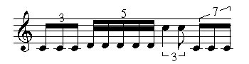If the beamed notes fall on different staves, start the beam on the higher staff even if the notes on that staff come later in the beam:
(let ((tag nil)) (cmn (staff bass (c3 e (setf tag (beam-))) (quarter-rest invisible) ; not strictly necessary, but improves spacing (eighth-rest invisible)) (staff bass (eighth-rest invisible) (d3 e (-beam- tag)) (ef3 e (-beam- tag)) (g3 e (-beam tag)) bar)))
If the onsets are given explicitly, the notes being beamed are sorted out automatically. Wedged ("feathered") beams (as used by Bartok and others) are implemented in wedge.lisp, included with cmn (see also cmn-ex.lisp for explicit beam choices). The function rqq in rqq.lisp extends this notion to much more fancy rhythms. See the comments and examples in that file for details; here's an example of rqq:
(cmn treble (rqq '(2 ((1 (1 1 1 2)) (1 (1 2)) (1 (1 2 4))))
g4 fs4 sixteenth-rest en4 (chord c4 ef4) eighth-rest af4 bf4 gf4))


endings
These are the first and second ending marks.
begin-first-ending begin-second-ending end-first-ending end-second-ending
Begin-first-ending and begin-second-ending take the additional messages:
max-line ;the line number of the highest (lowest) note under the octave sign terminal ;t if the ending is also the ending of the piece (cmn staff treble (meter 2 4) (c4 q) (c4 q) (bar begin-first-ending) (c4 q) (c4 q) (end-repeat-bar end-first-ending begin-second-ending) (c4 q) (c4 q) (bar end-second-ending) c4 q c4 q double-bar)

segno coda (cmn staff (bar (mm 96 e)) treble c4 w (bar segno) (c4 w) (bar coda) (c4 w) (bar (change-beat q. e)) (c4 w))

change-beat mm
These two set the current metronome marking and (as shown above) a change of beat. Change-beat takes two arguments, the old beat and the new beat. mm takes two arguments, the metronome marking, and optionally the rhythmic value that marking applies to (it defaults to a quarter note). Normally the metronome marking is a parenthetical addition to the tempo indication. mm also responds to in-parentheses and the various justification messages.
repeat-measure
The repeat-measure mark is centered between bar lines and has a metrical value equal to a measure. As a function it accepts an optional number to be displayed over the mark.
(cmn staff treble (meter 2 4) c4 q c4 q bar repeat-measure bar c4 q g4 q bar (repeat-measure 440) c4 q c4 q double-bar)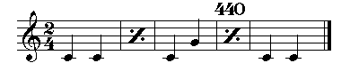
octave transposition
Octave transposition signs are added automatically to very high (or low) passages unless you set the score slot automatic-octave-signs to nil.
(cmn staff bass c5 e d5 e f5 e g5 e c5 q g4 q c4 q)

If you like the Italian persiflage of "va" and "ma" (or, God forbid, "bassa"), set the appropriate score structure slot (use-italian-octave-signs, add-bassa-to-octave-signs). Explicit octave signs are handled with:
begin-octave-up octave-up end-octave-up begin-octave-down octave-down end-octave-down begin-two-octaves-up two-octaves-up end-two-octaves-up begin-two-octaves-down two-octaves-down end-two-octaves-down begin-no-octave-sign no-octave-sign end-no-octave-sign
These act like the tie and slur messages. Octave-up and friends apply only to one note; no-octave-sign and friends turn off the automatic octave signs for short passages. The note pitch values within the octave signs are the displayed values, not the true values:
(cmn staff treble c4 q begin-two-octaves-up d4 q e4 q f4 q end-two-octaves-up)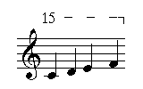
These take the messages vertical-separation, font-name, font-scaler, and octave-sign-pattern.
Rehearsal marks and measure numbers
Rehearsal marks are either numbers or letters, optionally boxed or circled, and normally attached to a bar line. The cmn entities are:
rehearsal-number rehearsal-letter
each of which take the additional message frame to set the type of the surrounding frame. The frame can be nil (the default), :none, :box, or :circle. It need be set only on the first rehearsal mark. Each mark after the first normally increments the mark letter or number ("Z" goes to "AA", and "I" is skipped), but you can reset the mark to be anything by passing it as an argument to rehearsal-number or whatever. measure-number is similar -- it displays a number. Other messages are: rehearsal-frame-width and rehearsal-frame-white-space.
page-mark and line-mark
Page-mark is an explicit end-of-page mark. Line-mark is an explicit end-of-line mark. Line-mark takes the additional messages dx and dy. In this context, these refer to the positioning and justification of the upcoming line. Normally staff positioning within a line is set by the dy message to the staff, and the staff/system-separation variables. There are cases where one line, or a staff within a line needs to be moved vertically to avoid collisions. Similarly, the justification decisions within a line are sometimes suboptimal. In a sense, the dx and dy messages provide you with a horizontal and vertical ruler to guide the positioning process to whatever level of detail you like. The argument to dx (in this case) is a list of lists, each inner list a pair of numbers: '(beat dx-position) where the beats (actually quarter-notes, not beats) are numbered from 1, and the dx-position is in the normal staff-based units (use in-inches, if you like). If more than one line-mark applies to a given line (via multiple staves, all being explicit about line breaks), all the dx (and dy) messages are merged before being applied to the justification of that line. Vertical (staff) positioning is handled by dy. Its argument can be a number, or a list of lists. If a number, it is like a local dy message to the staff it occurs in. If a list of lists, each inner list is a pair of numbers '(staff-number dy) where the dy number is in the usual units, and the staves are numbered from 1 at the top of the line. To see the current rulers, set the show-rulers field of the score. In the glorious (but distant) future, we will figure out how to tie this into the window system and use a mouse to push tab stops around, as in WriteNow. Line-break and page-break are the same as line-mark and page-mark.
Note list display (add-note, display-notes) add-note score name begin-time duration frequency &rest rest
Add-note is the main interface between clm note lists and cmn. name is the instrument name, begin-time and duration are in seconds, frequency is in Hz. cmn assumes 12 tone equal tempered 5-line staff output, and uses the score slot metronome to choose the closest simple rhythmic values for begin-time and duration. To save the result as a call on cmn, use cmn-store. The easiest way to read in a note list is to wrap it up in a list and call display-notes:
display-notes score-attributes notes
(display-notes nil
'((vln 0 .5 440 .1) (vln 0 .5 660 .1) (vln .5 .5 880 .1)))
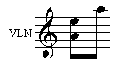We can now write this out as a call on cmn with cmn-store. The latter's two optional arguments are the score structure to be stored (it defaults to the last score created -- *cmn-score*), and the output file name (it defaults to "hi.cmn").
If the score slot automatic-naturals is t, cmn adds natural signs wherever they seem to be needed. The two slots, implicit-accidental-style and implicit-accidental-duration, give you some control over how these decisions are made. The style can currently be :new-style, :old-style, :only-chords, or :paranoid. The duration (perhaps "persistence" is a better word) is the number of notes an accidental mark hangs over -- it only applies to :new-style (the default) where it defaults to 1. :old-style is the 19th century way -- an accidental is cancelled only by a bar line. :paranoid doesn't let anything cancel an accidental. cmn tries to be smart about key signatures as well, but there are some weird ambiguous cases here.
graphics &rest objects
Any .eps file can be imported into the cmn score, rotated, scaled, and so on. Graphics takes one additional message to the usual ones: file. The argument to file is the name of the .eps file to be inserted.
(cmn (output-file "2.eps") staff treble c5 s)
(cmn staff treble
(c4 q (graphics (file "2.eps") (scale .6 .6)
(dx 2.0) (dy 1.0) (rotate 90))))

The contents of the .eps file are copied into the output file of cmn.
with-cmn &rest objects
It is possible to package up an entire score as a mark by calling with-cmn. with-cmn is just like cmn except that it doesn't open any files.

Extensions to the input functions |
cmn is just a normal Lisp function of any number of arguments. If an argument evaluates to nil, it is ignored (this is useful for functions called only for their side effects); if an argument is a score- object-list, the entire associated list is spliced into the argument list as though it had occurred that way from the start. To take advantage of this, use disgorge and engorge. Engorge returns a score- object-list instance containing the objects passed as its arguments; the various functions that take data lists (cmn, system, staff, etc) notice these objects and "flatten" them, treating the list of objects just as if they had come in the normal argument list. For example, say we want a bunch of quarter notes all staccato, stem down, and we are lazy typists:
(defun qsd (&rest notes)
(engorge
(loop for note-name in notes
collect (note note-name q staccato (stem-direction :down)))))
and now in cmn we can say: (cmn staff treble (qsd a4 c4 b4 g5 d5 d4))
This process can be carried as far as you like -- everything is
straight-forward lisp, and all of lisp is at your disposal. The
opposite of engorge (which wraps up the list of objects into a
score-object-list instance) is disgorge. When passed a
score-object-list instance, it returns the list you originally wrapped
up. A slightly more complicated example of engorge is the function:
cycle &rest objects
The objects passed to cycle are sequences of cmn objects. Each is treated as a circular list, and the result of cycle is a list whose length is the length of the longest sequence passed. Each object in the resultant list reflects the combination of the corresponding objects from the lists of sequences. That is,
(cmn staff treble (cycle (list c4 e4 g4 c4 e4 g4) (list e. s) staccato))
produces the same result as
(cmn staff treble (c4 e. staccato) (e4 s staccato) (g4 e. staccato)...)
In the same vein as engorge are the functions staff-engorge, system-engorge, and score-engorge, the latter involving the function score. Each of the engorging functions takes a list of staves, systems, or scores, and returns the new staff or whatever that contains all the data of its arguments. For example,
(setf v1 (staff treble (meter 3 4) c4 q c4 h))
(setf v2 (staff treble (meter 3 4) d4 h d4 q))
(cmn (staff-engorge (list v1 v2)))
(setf s1 (system (staff treble (meter 3 4) c4 q c4 h)
(staff bass (meter 3 4) c3 h c3 q)))
(setf s2 (system (staff treble (meter 3 4) d4 q d4 h)
(staff bass (meter 3 4) d3 h d3 q)))
(cmn (system-engorge (list s1 s2)))
(setf sc1 (score staff treble c4 h c4 q))
(setf sc2 (score (initial-onset 3) staff treble
(d4 q (onset 3)) (d4 h (onset 4))))
(cmn (score-engorge (list sc1 sc2)))
The arguments to system-engorge and score-engorge must be compatible in the sense that the list of systems and staves must match. Score looks like the overall cmn call, but it only packages up the score data ready for a "real" cmn call.
These functions provide the underlying support for sections. In the cmn function call described earlier, there is actually yet another outer layer above systems, called sections. These provide a way to package up portions of a piece, apply local score decisions to those portions, and then glue them all together at the end. Each section looks like a cmn or score call:
(cmn (section (redundant-accidentals nil)
(staff treble (meter 4 4) cs4 q cs4 q cs4 q cs4 q))
(section (staff treble cs4 q cs4 q cs4 q cs4 q)))
The successive sections either are abutted (as in the example above), or use the score slot section-onset to specify the starting time, or use the score-slot initial-onset with correct onsets within the section data.
Extensions to the display functions |
The easiest way to add your own graphics code is to package it up in a sundry instance and pass that to the object you want to own the code. The sundry class has two slots, sundry-name (a debugging convenience) and sundry-mark. Sundry-mark is a function that is called as follows:
(funall (sundry-mark sundry) sundry object score justifying).
The staccato function, for example, is essentially:
(defun staccato (&rest objects)
(make-instance 'sundry :name :staccato
:mark #'(lambda (mark note score &optional justifying)
(circle score
(+ (x0 note) (center note))
(+ (y0 note) .25)
.05 0 360))))
It finds the center of the note it belongs to, then tries to put a dot over it. Of course, the actual code is a bit more complicated because sometimes the dot goes under the note, we have to try to avoid colliding with staff lines, and we have to do something reasonable with the objects that might be passed as arguments to staccato. The basic graphics operations are:
lineto score x y ;add a line to (x,y) rlineto score dx dy ;add a line from the current point to (current-point+dx,current-point+dy) moveto score x y ;add a jump to (x,y) rmoveto score dx dy ;add a jump from the current-point to (current-point+dx,current-point+dy) curveto score x0 y0 x1 y1 x2 y2 ;add a Bezier curve from the current-point using these three points as guides show score mark ;display a mark of some sort draw score ;cause the current lines to be drawn fill-in score ;cause the current lines to be filled in circle score x y r &optional (ang1 0) (ang2 360) filled ;draw a circle, center (x,y), radius r starting at ang1 and going to ang2 line-width score ;the thickness of the line drawn by draw (a slot that can be setf'd)
The easiest way to mix text and music is to position the music using the margin slots, then attach the text as a series of marks on a staff. See cmnt.lisp for several examples used in this manual, cmn-glyphs.lisp for the standard music symbols, and percussion.lisp for a variety of simple examples. The field staff-y0 gives the bottom of the staff containing the current object.
A complete example |
Say we want to add a mark called smiley-face that will always appear above the staff centered over whatever object it is attached to. We want smiley-face to take all the usual messages. First, we write the display function that positions the face and draws it:
(defun display-smiley-face (mark note score &optional size)
(let* ((y-off (+ (y0 mark) (dy mark) (staff-y0 note)
(* (max 11 (+ 4 (head-line note))) *staff-line-separation*)))
(r (/ 10 40))
(x-off (+ (x0 note) -.05 (dx mark) (center note) (x0 mark))))
(with-thickness score mark .025
(circle score x-off y-off r)
(circle score x-off y-off (* r .6) 190 350)
(circle score (- x-off (* .33 r)) (+ y-off (* .25 r)) (* r .1))
(circle score (+ x-off (* .33 r)) (+ y-off (* .25 r)) (* r .1)))))
Using head-line, we either display the face above the staff (line 11) or above the note if it is above the staff. We center it over the note taking dx messages into account. Next we set the line width to be a little thicker than the minimum (.025), draw the outer circle, the mouth circle, and the two eyes. Now, to make this a normal CMN mark, we need to define the variable and function smiley-face.
(defvar smiley-face
(make-instance 'write-protected-sundry
:name :smiley-face :mark #'display-smiley-face))
(defun smiley-face (&rest objects)
(apply #'mark #'display-smiley-face :smiley-face objects))
and now we can use our new mark:
(cmn staff treble c4 q smiley-face)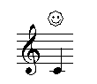
Here's an example of drawing an arbitrary set of connected line segments:
(defun a-line (line-data &rest objects) ;; line-data is assumed to be a list of x y breakpoints (apply #'mark (lambda (mark note score &optional size) (let* ((y-off (+ (y0 mark) (dy mark) (staff-y0 note))) (x-off (+ (x0 note) (dx mark) (x0 mark)))) (with-thickness score mark 0 (moveto score (+ x-off (first line-data)) (+ y-off (second line-data))) (loop for x in (cddr line-data) by #'cddr and y in (cdddr line-data) by #'cddr do (lineto score (+ x-off x) (+ y-off y))) (draw score)))) :a-line objects)) (cmn staff treble c4 q (a-line '(0 0 1.0 .5 2.0 0)))
with-scaling score size x0 y0 &body body with-transformation score matrix x0 y0 &body body with-pattern score pattern &body body
These macros take some arbitrary graphics code and then apply some transformation to the result. With-scaling evaluates body, scales the result by size in both the x and y directions and puts the result at the location (x0, y0) in the outer score. With-transformation is similar but lets you apply an arbitrary transformation to the result of evaluating body. Matrix is used to transform the result of body, and the result is placed at (x0, y0). In both cases, the (x0, y0) coordinates should be scaled by the overall score size. With-pattern evaluates body using the pattern pattern.
More complex graphics additions can follow the example of trill (for simple one-note marks), or ties (for multi-note marks). Each new class should include methods for descry (to produce a printed representation of the instance), copy (to copy an instance), and display (the graphics code associated with the object). For multi-note marks that need to know the position of the later marks, specialize backpatch to the new class. If your new class is a sub-class of the sundry class, there should be no special cases to worry about. If your object has metrical significance that the justification routines need to handle, add a house method (see any example in the source). If you want to add your own graphics procedures to the header or "prolog" portion of the graphics output, use the message prolog (passed to the score in the overall-score-attributes section). Prolog's argument is a function of one argument, the overall score. It should send whatever graphics code it wants to (output score). For example, say we want to use the "ISO encoding" for the Times-Roman font (to get at umlauts and so on). In this case, we can use the built-in function make-ISO-encoded-version (which can also serve as an example of a Prolog function):
(cmn (prolog #'(lambda (score)
(make-ISO-encoded-version score
"Times-Roman" "ISO-Times-Roman")))
staff treble
(c4 q (text "s\\374\\337"
(dy 1.5) (dx -.25) (font-name "ISO-Times-Roman")
(font-scaler .5) (gray-scale .25))))
There can be any number of prolog calls -- the associated procedures are called in the order given in the argument list. Similarly, the code executed by the sundry object can send graphics commands directly to the output graphics file -- (output score) is the output stream.
Line Layout |
Unless told otherwise, cmn includes every staff on every line, even if the staff has nothing but rests for line after line. There are a number of layout options to affect this decision. The layout message can be passed to the score (as one of the "attributes"), any system, or any staff, affecting everything "beneath" it that doesn't have some explicit layout directive. The default layout is nil; the other options are t, :old-style, :new-style, :locked, and a list of lists. :old-style layout includes a staff on a given line only if it has notes on that line. The layout t is the same as :old-style except that the first line of the score includes every staff (this is the norm for orchestra scores). :locked is used to explicitly override a higher-level layout setting, equivalent to an explicit (layout nil). :new-style layout omits the staff lines where the staff has no notes. Here's an example of :new-style
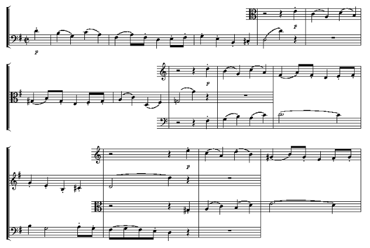Changing Global Justification Decisions |
The justification routines need to know which objects cannot be overwritten and how much white space they need or want around them. The four boxes surrounding each such object are its bounding box (x0 y0 to x1 y1 -- this is where the object is actually drawn), its "walls" (the absolute minimum white space the object can get by with), "fences" (the amount of white space that makes the object look uncrowded), and "expanders" (how to expand white space around the object when there's more space than we'd like). The walls, fences, and expanders are kept in variables with names such as:
bar-walls bar-fences bar-expanders
Each is a list of two numbers: left side, right side. Walls and fences are in the staff relative coordinates. Expanders are usually just integers -- the bigger the integer the more white space will be placed on that side of the object if needed to fill out the line. The bar data, for example, is:
(defparameter bar-walls '(.1 .1)) (defparameter bar-fences '(.1 .05)) (defparameter bar-expanders '(0 1))
These cause there to be .1 space on each side of the bar, no matter what. If bar-walls were '(.1 0) an object could stick right to it on the right side. You can uses the messages fences, walls, and expanders to make local changes to the spacing decisions. For example, in an extract from the Mozart Clarinet Quintet, the repeat bar was not giving itself enough white space, so I used:
(begin-and-end-repeat-bar (fences '(.2 .3)))
When a line is being justified and the line does not fill the page width, the score slot free-expansion-factor determines how much expansion takes place over the absolute minimum needed to display the objects. It defaults to 1.25, which may be a little stuffy, but 1.5 often looks spaced out. A free-expansion-factor less than 1.0 will force the objects to smash into each other. The score slot regularize (normally nil) can be used to instruct cmn to make a greater effort to attain a regular spacing.
Hooks |
editor-hook filter-hook page-hook line-hook spacing-hook
These "hooks" provide ways to edit the cmn data lists before the output is produced. Line-hook, page-hook, and spacing-hook are also score slots. See cmn-ex.lisp for examples. editor-hook is applied to the raw input data stream, and can be used to extract or transpose parts, for example. filter-hook is applied to the end result of the justification process, and can be used to extract a page from a large score, or apply some last minute editing function. The function extract-part provides part extraction using editor-hook. It takes the name of the part to be extracted, or a function that takes the staff name and returns t if it wants that part:
(cmn (extract-part "hi")
(staff (staff-name "hi") treble c4 q)
(staff (staff-name "ho") bass c4 q))
To transpose a score or any portion thereof, see transpose.lisp.
Examples |
There are a few longer examples included on the cmn directory: fux.cmn, moz.cmn, gus.cmn, carl.cmn, and so on. cmn-ex.lisp has some examples of programming in cmn. The examples in this manual are in cmnt.lisp. The variable *cmn-version* contains the current version number (a date).
Known bugs and lacunae |
The following are on my list of things to do: cadenzas, cues, better part-extraction, early music glyphs, fillable glyphs for X and Quickdraw, a complete graphical user interface
Bill Schottstaedt bil@ccrma.stanford.edu
Glossary |

Index |